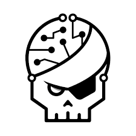
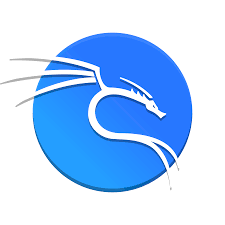
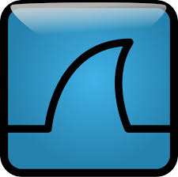
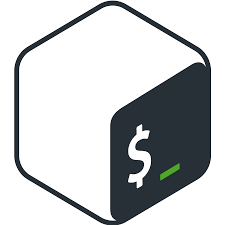
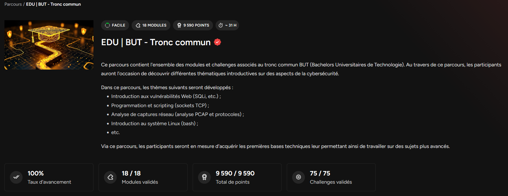

Résumé de la SAE
Cette SAE avait pour but de nous faire découvrir le pentesting via des challenges de type CTF (Capture The Flag). Le but de ces challenges est d'obtenir une ligne de texte (le flag) en réalisant une tâche se rapprochant, par exemple, de l'exploitation d'une faille dans un environnement volontairement vulnérable.
Nous avons eu accès à la version pro de Root-Me, qui propose un parcours adapté au BUT Réseaux et Télécommunications (Parcours EDU | Tronc commun). Ce parcours est constitué de 18 modules, regroupant au total 75 challenges permettant de découvrir différentes thématiques introductives sur des aspects de la cybersécurité.
Environnement et Outils

Root-Me
Plateforme d'apprentissage dédiée au hacking et à la sécurité de l'information proposant des environnements vulnérables.

Kali Linux
Distribution GNU/Linux orientée sécurité et pentest, utilisée pour exécuter les divers outils d'analyse et d'exploitation.
Python
Langage de scripting utilisé pour automatiser des tâches complexes ou interagir avec des sockets TCP.

Wireshark
Analyseur de paquets réseau utilisé pour disséquer des fichiers PCAP et récupérer des informations sensibles.
Outils Web
Compréhension des requêtes HTTP, manipulation des cookies, du code source et exploitation de failles type SQLi ou XSS.

Système Linux (Bash)
Utilisation des commandes de base, gestion des permissions et élévation de privilèges en environnement Bash.
Avancement sur la plateforme

Thématiques abordées
1. Vulnérabilités Web
Introduction à la sécurité des applications web. Exploitation de vulnérabilités classiques telles que les injections SQL (SQLi), les failles XSS, ou encore le contournement d'authentification.
2. Programmation et Scripting
Création de scripts d'automatisation. Utilisation des sockets TCP en Python pour interagir dynamiquement avec des services distants afin de résoudre des problèmes mathématiques ou logiques en temps limité.
3. Analyse Réseau
Étude approfondie de captures réseau (fichiers PCAP) à l'aide de Wireshark. Compréhension de l'encapsulation, analyse des protocoles et extraction de données en clair telles que des identifiants.
4. Système Linux
Navigation en ligne de commande, compréhension de la structure des permissions sous Linux, et exploitation de mauvaises configurations pour effectuer des élévations de privilèges.
Compétences validées
Cette SAE s'inscrit pleinement dans le parcours Cybersécurité du BUT et permet de valider les apprentissages suivants :
- AC21.04 Exploiter les vulnérabilités d’un système informatique ou d'une application web.
- AC22.01 Identifier les menaces et vulnérabilités d’un système (analyse de flux et de code).
- AC13.02 Lire, exécuter, corriger et modifier un programme (scripting d'automatisation).
- AC13.01 Utiliser un système informatique et ses outils en ligne de commande (Kali Linux, Bash).
Analyse réflexive
Au cours de cette SAE, j'ai pu consolider mes bases dans de nombreux domaines et découvrir de nouvelles notions car ces challenges s'appuient sur des techniques précises. Cette approche invite à la recherche de documentations ainsi qu'à l'entraide en étudiant, et j'ai apprécié l'approche très concrète de cette SAE. J'ai pu lors de celle-ci terminer l'ensemble des 75 challenges proposés.